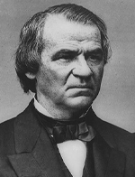

|

|

|
|
|
Tailor, merchant, governor, U.S. senator, vice president and 17th
president, Andrew Johnson took office upon the assassination of
President Abraham Lincoln in April 1865. An "accidental president,"
Johnson's tenure as chief executive was marked by turmoil and
controversy, some of it due to his political blunders and incompetence.
He enjoys the dubious distinction of being the first president to be
impeached while in office.
Born on December 29, 1808 in North Carolina to parents of humble
means, Johnson had virtually no schooling. As a young boy, Johnson was
apprenticed to a tailor, but fled at the first opportunity, landing in
Greenville, Tennessee. There, he opened a thriving tailor business and
established himself as a wealthy merchant. Married and successful,
Johnson turned to politics, where he followed in the footsteps of his
hero, Democrat Andrew Jackson. Although a slaveholder himself, Johnson
detested the wealthy planters who dominated southern politics and
economic power. As he moved up the political ladder from local to state
to national office, Johnson became known as a champion for the ordinary
white southern yeoman farmer.
When the Civil War broke out Johnson had for three years been the
U.S. Senator from Tennessee. A decided Unionist, he followed the United
States flag, the only member of Congress' upper house to remain loyal
from a seceded state. Labeled a traitor throughout the South, he was a
hailed as a hero in the North. The Union Army captured Nashville and
occupied secessionist western Tennessee in March 1862. Shortly
afterwards, Lincoln appointed Johnson to serve as the state's wartime
governor.
Johnson worked hard to restore his state to the Union, something that
was made more difficult because the Confederates controlled eastern
Tennessee. By summer of 1863 Johnson endorsed emancipation, and
supported strongly Lincoln's efforts to end slavery in the border-
states. Due to Johnson's persistence in January of 1865 a Tennessee
state convention approved the abolition of slavery, and the voters
quickly ratified the measure.
In 1864, the Republicans (temporarily renamed the American Union
Party) wished to attract War Democrats by placing Andrew Johnson, the
popular Unionist, on the ticket with Lincoln. The Party won handily, and
Johnson was inaugurated as vice-president on March 4, 1865. Feeling ill
on inauguration day, Johnson fortified himself with several glasses of
whiskey before his speech. The result was a rambling, incoherent tirade
that embarrassed all who witnessed it. Johnson created a more favorable
impression when, after Lincoln's death early in the morning of April
15th, he took the oath of office at the Kirkwood House in a dignified
and calm manner. The shocking aftermath of the assassination gave
Johnson a period of overwhelming support among northern politicians and
voters. He presided competently over the pursuit, capture and trial of
Lincoln's assassins, and created an atmosphere of friendly relations
between the executive and congressional branches as the problems of
reconstruction loomed.
"Treason must be made infamous and traitors must be impoverished,"
declared Johnson. Radicals could be forgiven if they thought the new
president would stand with them in implementing a harsh reconstruction
policy. They were wrong. Johnson, like Lincoln, believed that secession
was illegal, and thus the rebel states were never actually out of the
Union. Johnson's vision was a harmonious "restoration," directed by the
executive branch. His plan was simple. The seceded states had to ratify
the 13th amendment, nullify the secession laws, and repudiate the
Confederate debt. Once those requirements were met, elections could be
held, civil governments restored, and elected officials could take their
places at all levels, including the national legislature.
Johnson ignored requests from radicals that he include suffrage for
African Americans as part of the restoration plan. A typical states
rights Democrat, he feared the intrusion of the federal government into
areas that trespassed on state sovereignty. In addition, he was a fierce
opponent of black voting and civil rights measures. The fact that the
dominant Republican Congress would not come into session until December
1865, meant that Johnson could push through his measures with executive
decrees.
Johnson busied himself in obstructing all Congressional policies
designed to assist ex-slaves. In September 1865, Johnson virtually ended
land redistribution to freedmen and poor whites. He ordered Freedmen's
Bureau Commissioner, General O.O. Howard, to return all confiscated
lands to white southerners who had been pardoned. Under Johnson's May,
1865, plan, only rebellious southerners who owned more than $20,000 in
taxable property had to receive a presidential pardon personally, the
rest were pardoned automatically. Nearly all, over 6,000, in need of a
presidential pardon received one after a short visit with Johnson. By
the end of 1865, all of the southern states except Texas had followed
Johnson's plan and applied for re-entry into the Union. Johnson
considered "restoration" complete.
The consequences of Johnson's acting unilaterally were deeply
unsettling. Northerners reacted with horror as ex-Confederates blatantly
assumed power as if there had never been a war at all. In state after
state, black codes were passed which made emancipation a dead letter.
Republicans of all backgrounds in Congress supported a more stringent
Reconstruction, and pushed for protection for African Americans'
economic and basic civil rights.
In December, the hostility between the executive and the legislative
branches deepened when the "restored" southern congressmen arrived in
the capital to take their places in the senate and house chambers. The
newly elected officials included 4 ex-Confederate generals, 8 colonels,
six ex-cabinet members, and the Confederacy's Vice-President, Alexander
Stephens. Congress refused to seat the southerners, in effect rejecting
presidential reconstruction. The best both sides could hope for now was
a serious session of compromise. Johnson, however, refused to negotiate
with the Republicans on reconstruction.
In early 1866, Congress passed two bills, one extending the
Freedmen's Bureau and the other creating the Civil Rights Act of 1866.
Johnson vetoed both bills. Congress would later override his vetoes and
the bills became law. Even the most moderate Republicans moved into
alignment with the Radical Republicans (so named for their support of
the freedmen) after Johnson's policies had rendered emancipation and
civil rights essentially meaningless.
Republicans implemented a plan that set strict requirements for
states reentering the Union. These requirements mandated military
occupation for all Confederate states (with the exception of Tennessee)
until a state convention recognized freedmen's rights to citizenship and
all the other provisions of the 14th Amendment, and ended the racially
discriminatory black codes. Eventually, Congress even called for
African-American male suffrage. Johnson vetoed nearly every bill, but
was again overridden nearly every time.
Johnson, who thought he enjoyed the support of most northerners,
fought hard for his restoration plan. He still controlled the military,
which was responsible for carrying out congressional reconstruction. As
Commander-in-Chief, he appointed politically conservative, pro-southern
officers to military posts in the South. This further alienated his few
supporters left in Congress. Increasingly, his pronouncements were
controversial. Terrible race riots in Memphis and New Orleans in the
spring and summer of 1866 belied Johnson's assurances that conditions in
the South were returning to normal. Congress further turned against the
President.
Before the 1866 congressional elections, Johnson undertook a
controversial speaking tour known as the "Swing around the Circle." His
goal was to rally voter support for his policies. Unfortunately,
Johnson's speeches were divisive, rude, and often confrontational. He
received much negative publicity, and many in the crowds booed his
appearances. Gossips whispered that the President had been drunk for
much of the tour. Drunk or not, the tour was a disaster at the polls,
and a large, "veto-proof" Republican majority was returned to Congress
In March 1867, the House and Senate passed the Tenure of Office Act
over Johnson's veto. The Act required Johnson to obtain the Senate's
approval before dismissing any of his cabinet members. It was designed
to protect Secretary of War Edwin Stanton, a leftover from Lincoln's
cabinet and a Radical Republican. Citing his executive powers, Johnson
suspended Stanton in August 1867 without the Senate's consent. After
much political wrangling, the House impeached Johnson in February 1868
for committing high crimes and misdemeanors in office, the first ever
impeachment in United States history. However, the Senate failed to
convict him by one vote. Vindicated but powerless, Johnson did not
accomplish anything of significance for the rest of his term.
In 1868 the Democrats chose Horatio Seymour to run for president
against Ulysses S. Grant. Johnson was quite bitter over his treatment in
Washington D.C. and refused to attend Grant's inauguration. Andrew
Johnson retired to Tennessee, but reentered politics. Johnson returned
to the U.S. Senate in 1875, whereupon he served for only a few months
before his death on August 31, 1875.
Source: Joan Waugh, ed., Facts on File Encyclopedia of American
History: Civil War and Reconstruction, 1856 to 1869 (New York: Facts on
File, 2003), 187-89.
|